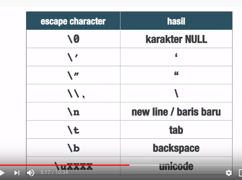
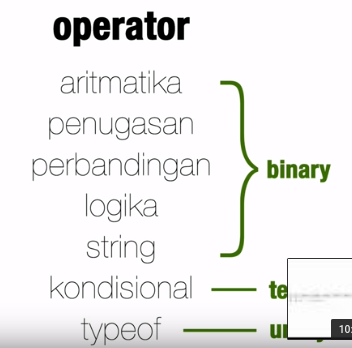
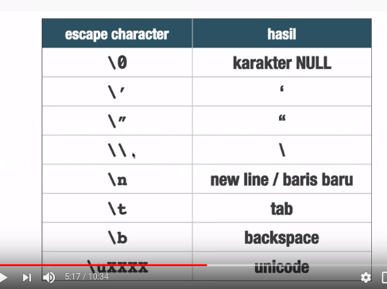
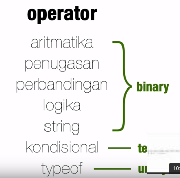

Tipe Data pada Javascript
Cek console
didalam Javascript tidak ada integer yang ada hanya floating point(bilangan pecahan)
operator dalam javascript :
- aritmatika
- penugasan
- perbandingan
- logika
- string
- kondisional
- typeof
Loncat ke Dokumentasi JS ke-2
Materi Halaman ini dari Awal sampai Tipe Data string
 


